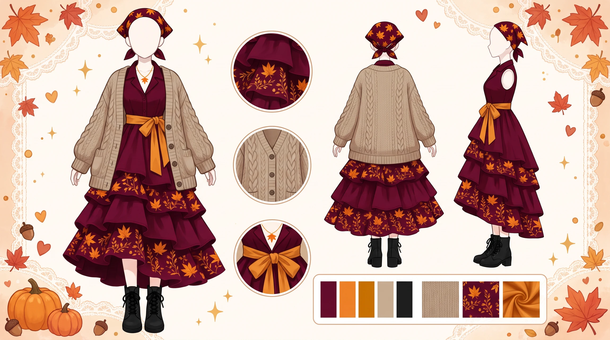
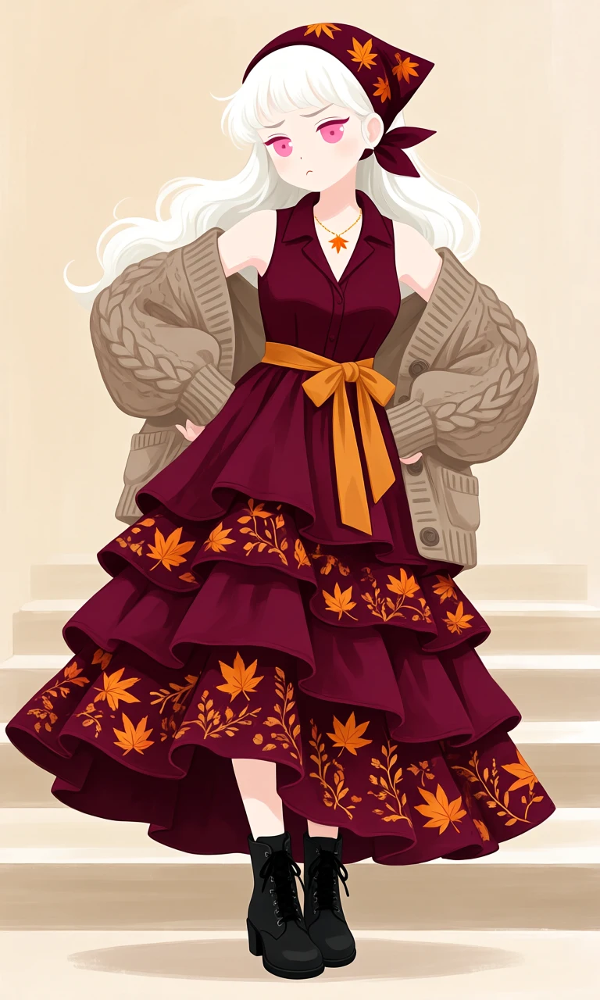
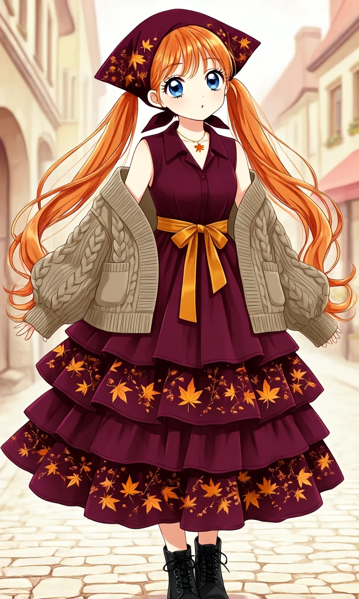

Woodland Darling: Burgundy Waltz

Outfit Prompt
Wearing a deep burgundy sleeveless collared dress with a modest V-shaped neckline, a tailored bodice, and a softly flowing mid-calf skirt. A warm golden-caramel fabric sash wraps around the natural waist, tied into a bow at the front with two long ribbon ends.
SKIRT DESIGN: The skirt is made from exactly five short, overlapping horizontal fabric layers, beginning immediately below the waist sash and continuing evenly down to mid-calf.
The skirt maintains a moderately narrow, softly flowing silhouette from the hips to the hem. Each layer gently widens outward by a small amount, creating subtle volume through the overlapping fabric rather than dramatic fullness.
The five layers alternate in this exact order:
1\. Solid deep burgundy fabric, beginning at the waist and ending at the upper hips.
2\. Deep burgundy fabric decorated with golden-orange maple leaves and delicate botanical vines, covering the hips.
3\. Solid deep burgundy fabric, covering the upper thighs.
4\. Deep burgundy fabric decorated with golden-orange maple leaves and delicate botanical vines, covering the lower thighs.
5\. Solid deep burgundy fabric, ending at mid-calf.
All five layers have soft, gently rippling edges with minimal gathering. Each layer is approximately the same height, with only slight overlapping between them.
The skirt has a consistent width progression from the waist downward, gently widening toward the hem without sudden changes in shape. The upper layers are clearly visible around the hips and thighs, rather than concentrated near the knees.
Over the dress, an oversized warm taupe cable-knit cardigan, worn open and slipping slightly off both shoulders. The cardigan features large balloon sleeves, thick braided cable-knit patterns, ribbed cuffs, ribbed front edges, and two large front pockets.
A deep burgundy triangular headscarf decorated with scattered golden-orange maple leaves, tied behind the head with short pointed ends.
A delicate gold necklace featuring a small orange maple leaf pendant.
Black lace-up ankle boots with rounded toes, chunky low heels, and black laces.
Cozy autumn cottagecore fashion, rich burgundy, warm taupe, golden caramel, and autumn orange color palette.
Outfit Examples



